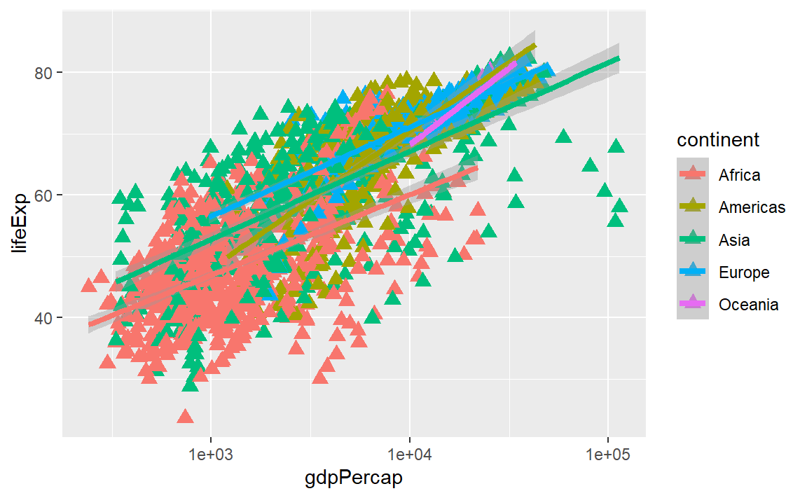

28 . 논문 품질 그래프 생성
데이터를 도식화하는 것이 변수간 다양한 관계를 재빨리 탐색하는 최상의 방식 중 하나다.
R에는 세가지 주류 도식화 시스템이 존재한다: Base 도식화 시스템, lattice 팩키지, ggplot2 팩키지.
금일, ggplot2 팩키지를 학습할 것인데 이유는 논문 품질 그래프를 생성하는데
가장 효과적이기 때문이다.
ggplot2는 그래픽 문법(grammar of graphics)에 기반했다.
즉, 어떤 그래프도 동일한 구성요소 집합으로 표현된다:
데이터셋, 좌표 시스템, geoms 집합 – 데이터 점에 대한 시각적 표현.
ggplot2를 이해하는 핵심은 그림을 계층으로 사고하는 것이다:
포토샵(Photoshop), 일러스트레이터(Illustrator), 잉크스케이프(Inkscape.) 같은 이미지 편집 프로그램으로 작업하는 것과 같다.
예제를 가지고 시작해본다:
library("ggplot2")
ggplot(data = gapminder, aes(x = gdpPercap, y = lifeExp)) +
geom_point()
그래서, 처음으로 수행하는 작업은 ggplot 함수를 호출하는 것이다.
이 함수가 R에게 새로운 그림을 생성하고,
ggplot 함수에 전달하는 어떤 인자도 해당 그림에 전역 선택옵션(그림에 있는 모든 계층에 적용)임을 전달한다.
ggplot에 인자를 두개 전달했다.
먼저, ggplot에 그림에 사용할 데이터가 무엇인지 전달한다;
번 예제에서 앞에서 불러온 gapminder데이터.
두번째 인자를 aes함수에 전달했는데,
ggplot에게 데이터에 나온 변수를 도식화하는 그림의 미학적인 속성에 매핑하는 방법을 전달한다;
이번 경우에는 x와 y 위치. 여기서 ggplot에 gapminder데이터프레임 “lifeExp” 칼럼을 x-축에,
“gdpPercap” 칼럼을 y-축에 도식화한다.
명시적으로 aes에 칼럼명을 전달(예를 들어, x = gapminder[, “lifeExp”])하지 않은 것에 주목한다. 이것이 가능한 이유는ggplot` 함수가 데이터에 존재하는 칼럼을 식별할만큼 똑똑하기 때문이다!
그 자체로, ggplot함수를 호출한다고 도식화가 바로 되는 것은 아니다:

ggplot 함수에 데이터를 시각적으로 표현하는 방법을 전달할 필요가 있다.
geom 계층을 추가해서 작업이 수행된다. 본 사례에서, geom_point를 사용했다;
x와 y 사이 관계를 시각적으로 산점도 형태로 표현하도록 ggplot에게 전달한다:
ggplot(data = gapminder, aes(x = gdpPercap, y = lifeExp)) +
geom_point()
28.1 도전과제 1
상기예제를 변경해서, 기대수명이 시간에 따라 어떻게 변해왔는지 시각화하는 그림을 생성한다:
ggplot(data = gapminder, aes(x = gdpPercap, y = lifeExp)) + geom_point()힌트: gapminder 데이터셋에 “year”라는 칼럼이 있는데, x-축에 나타나야 된다.
도전과제 1에 대한 해답
한가지 해법은 다음과 같다:
ggplot(data = gapminder, aes(x = year, y = lifeExp)) + geom_point()

28.2 도전과제 2
이전 예제와 도전과제에서, aes 함수를 사용해서 geom 산점도로 x 와 y 지점을
각 점에 대해 표현했다.
변경할 수 있는 또다른 미학적 속성은 각 점에 대한 색깔이다.
앞선 도전과제 코드를 변경해서 “continent” 대륙별로 각 점에 색을 입힌다.
데이터에서 어떤 경향성을 볼 수 있는가? 예상했던 경향성인가?
도전과제 2에 대한 해답
앞선 예제와 도전과제에서 x 와 y의 각 점에 대한 좌표로 geom 산점도를
aes함수에 사용했다. aesthetic의 또다른 특성으로 점에 대한 색상을 변경할 수 있다는 점이다. “continent” 칼럼을 색상(color)에 적용해서 이전 도전과제 코드에 접목시켜보자. 데이터에서 어떤 추세를 볼 수 있는가? 추세가 예상했던 것인가?ggplot(data = gapminder, aes(x = year, y = lifeExp, color=continent)) + geom_point()

28.3 계층(Layers)
산점도가 아마도 시간에 따라 변하는 정보를 시각화하는데 최선은 아니다.
대신에, ggplot에 선그래프(line plot)로 데이터를 시각화한다:
geom_point 계층을 추가하는 대신에, geom_line 계층을 추가했다.
aes로 by를 추가해서, ggplot이 각 국가를 직선으로 연결해서 도식화한다.
하지만, 직선과 점을 함께 시각화하려고 하면 어떨까? 단순히, 또다른 계층을 그림에 추가하면 된다:
ggplot(data = gapminder, aes(x=year, y=lifeExp, by=country, color=continent)) +
geom_line() + geom_point()
각 계층은 이전 계층 위에 도식화됨에 주목한다. 이번 예제에서, 점이 직선 위에 도식화되었다. 다음에 도식화한 산출물이 나와있다:
ggplot(data = gapminder, aes(x=year, y=lifeExp, by=country)) +
geom_line(aes(color=continent)) + geom_point()이번 예제에서, aesthetic인 색상 매핑이 ggplot에 전역으로 설정된 점 선택옵션에서
geom_line 계층으로 이동했다. 그래서, 해당 점에는 더이상 적용되지 않는다.
이제 분명하게 직선 위에 점이 도식화된 것을 확인할 수 있다.
꿀팁: aesthetic에 매핑대신에 값을 설정
지금까지 (색상같은) aesthetic 를 데이터의 변수로 매핑(mapping)해서 사용하는 법을 살펴봤다.
예를 들어, geom_line(aes(color=continent))을 사용하면, ggplot에서 자동으로 각 대륙별로 다른 색상을 입힌다.
그런데, 모든 선을 파란색으로 바꾸고자 하면 어떨까? geom_line(aes(color="blue")) 명령어가 동작해야 된다고 생각하지만,
사실은 그렇지 않다.특정 변수에 대한 매핑을 생성하지 않았기 대문에,
aes() 함수 밖으로 색상을 명세하는 부분을 예를 들어, geom_line(color="blue")와 같이 빼내기만 하면 된다.
28.4 도전과제 3
앞선 예제에서 점과 직선 계층 코딩 순서를 뒤바꾼다. 어떻게 될까요?
도전과제 3에 대한 해답
앞선 예제에서 점과 직선 계층 코딩 순서를 뒤바꾼다. 어떻게 될까요?
ggplot(data = gapminder, aes(x=year, y=lifeExp, by=country)) + geom_point() + geom_line(aes(color=continent))선이 점 위에 올라온다!

28.5 변환과 통계량
변환(Transformations)과 통계량(statistics)을 살펴보자.
ggplot으로 데이터 위에 통계적 모형을 쉽게 겹치게 할 수 있다.
이를 시연하기 위해서, 첫번째 예제로 되돌아간다:
ggplot(data = gapminder, aes(x = gdpPercap, y = lifeExp, color=continent)) +
geom_point()
현재, 일인당 GDP에 일부 심각한 이상점이 있어 점사이 내재된 관계를 보기 힘들다. scale 척도함수를 사용해서 y-축 척도를 변경한다. 이것을 통해 데이터 값과 aesthetic 시각값 사이 매핑을 제어한다. alpha 함수를 통해 투명도도 조정할 수 있다. 군집으로 많은 데이터가 모아진 경우 특히 투명도 조절을 유용하다.
ggplot(data = gapminder, aes(x = gdpPercap, y = lifeExp)) +
geom_point(alpha = 0.5) + scale_x_log10()
그림에 렌더링하기 전에 log10 함수가 gdpPercap 칼럼값에 변환을 시켰다.
그래서, 각 자리수 10은 변환된 척도에 1씩 증가에 대응된다.
예를 들어, 1인당 GDP 1,000은 y-축에 3, 10,000은 y-축에 4에 대응된다.
로그 변환은 x-축에 흩어진 데이터 시각화를 쉽게 도와준다.
꿀팁: aesthetic에 매핑대신에 값을 설정
geom_point(alpha = 0.5) 을 사용한 것에 주목한다.
앞서 언급했듯이, aes() 함수 외부에서 설정된 것은 모든 점에 대해서 지정한 값이 적용되게 된다.
투명도 지정은 이 경우 원하는 바로 문제가 전혀 없다.
하지만, 다른 aesthetic 설정처럼, alpha 투명도를 데이터의 변수에 매핑시킬 수도 있다.
예를 들어, 각 대륙별로 다른 투명도를 적용시키고자 하면, geom_point(aes(alpha = continent)) 코딩하는 것도 가능하다.
또다른 계층(geom_smooth)을 추가해서 관계를 단순히 적합시킬 수 있다:
ggplot(data = gapminder, aes(x = gdpPercap, y = lifeExp)) +
geom_point() + scale_x_log10() + geom_smooth(method="lm")굵은 선은 geom_smooth 계층에 aesthetic 크기를 설정해서 조정할 수 있다:
ggplot(data = gapminder, aes(x = gdpPercap, y = lifeExp)) +
geom_point() + scale_x_log10() + geom_smooth(method="lm", size=1.5)미학적인 항목을 명세할 수 있는 방식이 두개 있다.
바로 앞에서 geom_smooth 함수에 인자로 전달해서 크기에 대한 미학적인 설정을 했다.
앞에서는 aes 함수를 사용해서 데이터 변수와 시각적 표현 사이 매핑으로 정의했다.
28.6 도전과제 4a
바로 앞 예제에서 점 계층에 나온 점 크기와 색상을 변경하라.
힌트: aes 함수를 사용하지 않는다.
도전과제 4a에 대한 해답
바로 앞 예제에서 점 계층에 나온 점 크기와 색상을 변경하라.
힌트:
aes함수를 사용하지 않는다.ggplot(data = gapminder, aes(x = gdpPercap, y = lifeExp)) + geom_point(size=3, color="orange") + scale_x_log10() + geom_smooth(method="lm", size=1.5)

28.7 도전과제 4b
도전과제 4a를 변경하는데, 점들이 다른 형태(shape)를 갖고 대륙별로 색상을 달리하는데 대륙별로 추세선을 반영한다.
힌트: 색상 인자를 aesthetic 내부로 위치시킨다.
도전과제 4b에 대한 해답
도전과제 4a를 변경하는데, 점들이 다른 형태(shape)를 갖고 대륙별로 색상을 달리하는데 대륙별로 추세선을 반영한다. 힌트: 색상 인자를
aesthetic내부로 위치시킨다.ggplot(data = gapminder, aes(x = gdpPercap, y = lifeExp, color = continent)) + geom_point(size=3, shape=17) + scale_x_log10() + geom_smooth(method="lm", size=1.5)
28.8 다중-창(Multi-Panel) 그림
앞에서 그림 하나에 모든 국가에 대해 시간의 변화에 따른 기대수명 변화를 시각화했다. 대안으로, 패싯(facet) 창 계층을 추가해서, 그림을 여러개 창으로 쪼갤 수도 있다: “A” 혹은 “Z”로 시작하는 국가명을 갖는 나라만 집중해 보자.
팁(Tip)
데이터 부분집합(subset)을 추출하고 시작해 나간다.
substr 함수를 사용해서 문자열의 일부를 뽑아낸다; 이 경우에,
gapminder$country 벡터의 시작과 끝 위치 문자가 된다.
%in% 연산자를 통해서 조건을 만족하는 긴 코드 대신에 다중 비교를
간단히 수행한다.
(이 경우, starts.with %in% c("A", "Z") 코드는
starts.with == "A" | starts.with == "Z")와 동일하다)
starts.with <- substr(gapminder$country, start = 1, stop = 1)
az.countries <- gapminder[starts.with %in% c("A", "Z"), ]
ggplot(data = az.countries, aes(x = year, y = lifeExp, color=continent)) +
geom_line() + facet_wrap( ~ country)
facet_wrap 계층은 “공식(formula)”을 인자로 받는데, (~) 틸드로 표기한다.
gapminder 데이터셋 국가별 칼럼의 유일한 값 각각에 대해 별도 창을 통해 도식화한다.
28.9 텍스트 변경
논문 출판으로 그림을 깔끔하게 만들려면, 텍스트 요소를 일부 변경할 필요가 있다. x-축이 너무 난잡하고, y-축은 데이터프레임 칼럼명이 아닌 “Life expectancy”으로 적혀야 된다.
몇개 다른 계층을 추가함으로써 텍스트를 변경할 수 있다.
theme 계층은 각 축에 대한 텍스트, 전반적인 텍스트 크기를 제어한다.
축, 그래프 제목, 범례는 labs() 함수를 사용해서 설정하다.
범례 제목은 aes() 함수에서 명세한 것과 동일한 명칭을 사용한다.
따라서, 색상 범례 제목은 color = "Continent"이 되는 반면에,
채우기(fill) 범례는 fill = "MyTitle"으로 설정하게 된다.
ggplot(data = az.countries, aes(x = year, y = lifeExp, color=continent)) +
geom_line() + facet_wrap( ~ country) +
labs(
x = "Year", # x axis title
y = "Life expectancy", # y axis title
title = "Figure 1", # main title of figure
color = "Continent" # title of legend
) +
theme(axis.text.x=element_blank(), axis.ticks.x=element_blank())28.10 그래프 내보내기
ggsave() 함수를 사용해서 ggplot으로 생성시킨 그래프를 내보내서 로컬 컴퓨터에 저장할 수 있다.
출판을 위한 고품질 그래픽 산출물을 생성하기 위해서
그래프 크기와 해상도를 ggsave() 함수의 인자(width, height, dpi)로 넘기면 된다.
앞서 생성한 그래프를 저장하려면,
먼저 lifeExp_plot 변수에 그래프를 할당하고 나서,
ggsave() 함수에 png 형식으로 results 디렉토리에 저장하도록 지정한다.
(현 작업디렉토리에 results/ 폴더가 생성되어 있어야 한다.)
lifeExp_plot <- ggplot(data = az.countries, aes(x = year, y = lifeExp, color=continent)) +
geom_line() + facet_wrap( ~ country) +
labs(
x = "Year", # x axis title
y = "Life expectancy", # y axis title
title = "Figure 1", # main title of figure
color = "Continent" # title of legend
) +
theme(axis.text.x=element_blank(), axis.ticks.x=element_blank())
ggsave(filename = "results/lifeExp.png", plot = lifeExp_plot, width = 12, height = 10, dpi = 300, units = "cm")ggsave() 함수에 두가지 멋진 점이 있다.
첫째는 기본설정값으로 가장 마지막 그래프가 지정되어 있어서,
plot 인자를 생략하게 되면, 자동으로 ggplot으로 생성한 마지막 그래프가 저장된다.
둘째로, 저장되는 그래프 이미지 형식이 파일명으로 전달하는 파일 확장자(예를 들어, .png 혹은 .pdf)에 따라 결정된다.
필요한 경우, device 인자에 명시적으로 파일 형식을 지정할 수도 있다.
지금까지 ggplot2 맛을 보았다. RStudio는 정말 유용한 cheat sheet를 통해서 다른 계층 사용법에 대한
참고서로 충실한 정보를 제공하고 있고, ggplot2 웹사이트에 추가기능에 대한 상세한 정보가 공개되어 있다.
마지막으로, 어떻게 수정을 해야하는지 아무런 생각이 없다면, 구글 검색을 통해서 결국 Stack Overflow 웹사이트에 재사용 가능한 코드를 통해서 관련된 질문과 답변을 수월히 얻을 수 있다!
28.11 도전과제 5
대륙별로 채워진 1인당 GPD 밀도 그래프를 생성하라. 고급: - x-축을 변경해서 쭉 펼쳐진 데이터를 좀더 보기좋게 시각화하라. - 패싯 계층을 추가해서 연도별로 밀도 그래프를 창에 도식화하라.
도전과제 5에 대한 해답
대륙별로 채워진 1인당 GPD 밀도 그래프를 생성하라.
고급: - x-축을 변경해서 쭉 펼쳐진 데이터를 좀더 보기좋게 시각화하라. - 패싯 계층을 추가해서 연도별로 밀도 그래프를 창에 도식화하라.
ggplot(data = gapminder, aes(x = gdpPercap, fill=continent)) + geom_density(alpha=0.6) + facet_wrap( ~ year) + scale_x_log10()